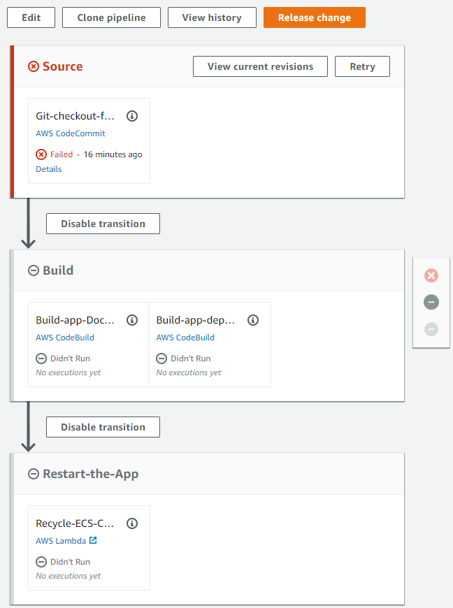
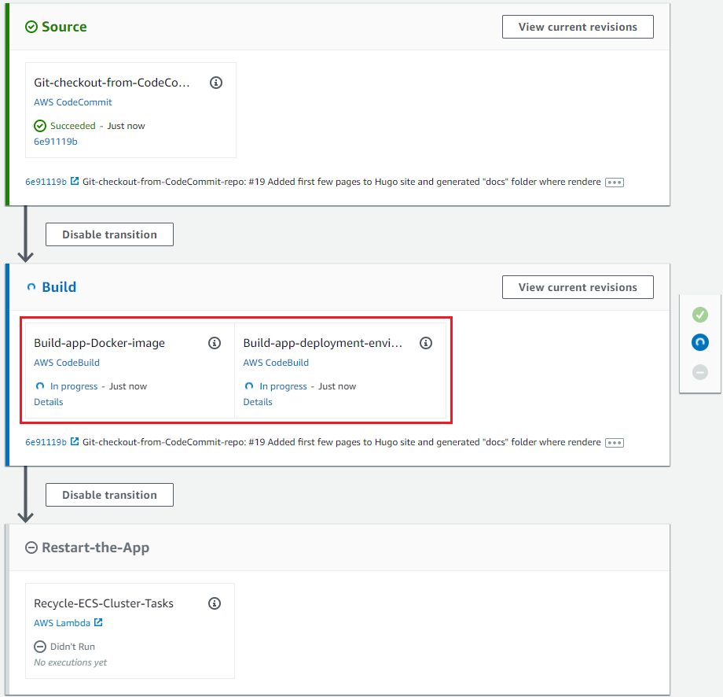
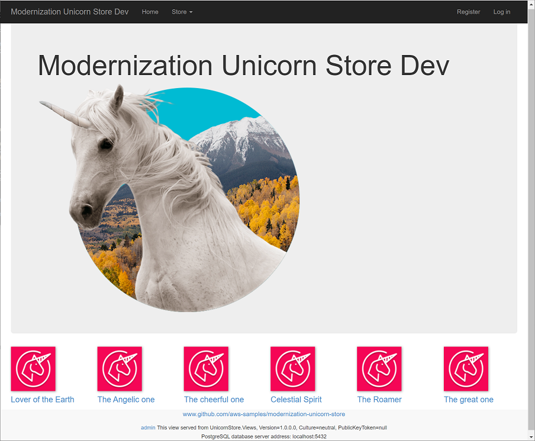

At this point the CI/CD pipeline cloud infrastructure, the build out of which was launched two chapters back, should now be completed.
First, please check the command prompt console where you ran cdk deploy for the “CicdInfraAsCode” project, to make there were errors. You should see something like the following at the tail of the output after command has finished:
30/30 | 1:10:43 PM | CREATE_COMPLETE | AWS::CloudFormation::Stack | Unicorn-Store-CI-CD-PipelineStack
✅ Unicorn-Store-CI-CD-PipelineStack
Stack ARN:
arn:aws:cloudformation:us-east-1:123456789012:stack/Unicorn-Store-CI-CD-PipelineStack/eee6e58c-6808-48a2-9885-c719f44dd8b6
Next, navigate to the CodePipeline in the AWS Console and observe “Unicorn-Store-CI-CD-Pipeline” in the list, showing the “Failed” status next to it. The pipeline is in the failed state because the source code of the Unicorn Store solution has not yet been pushed to the CodeCommit Git repository.
Please click on the “Unicorn-Store-CI-CD-Pipeline” link to see the never-run pipeline: 
To trigger the build and deployment pipeline, all we need to do is to push the Unicorn Store to the CodeCommit Git repository just created.
Following step - adding Git “remote” (alias) pointing to the CodeCommit repository, can be skipped if you are taking this lab at an AWS event, as the “aws” Git remote is already on your dev VM.
Windows users, please use Powershell in Administrator mode for running commands that follow.
Create Git “remote” named “aws”:
git remote add aws (aws codecommit get-repository --repository-name Unicorn-Store-Sample-Git-Repo | jq -r .repositoryMetadata.cloneUrlHttp)Push the code to the CodeCommit repository:
git push aws cdk-moduleObserve CodePipeline Build in-progress by waiting half a minute or so and then going to the CodePipeline page in the AWS Console: 
First run of the pipeline is likely to take approximately
15 minutes, primarily due to time required to provision application database and ECS-based application hosting infrastructure. Subsequent pipeline runs cas run to completion in under one minute.
While the pipeline is busy building the application and provisioning application hosting infrastructure, we have about 15-20 minutes to start hacking the app and CDK project, adding MySQL support to it. Feel free to go to the next chapter and come back here later to ensure the pipeline
Whenever the pipeline has finished, feel free to browse to the AWS Load Balancer page in the AWS Console, select a load balancer with the name starting with “Unico” and click the “copy to clipboard” icon next to the “DNS Name” field.
Then paste the URL into a new browser tab, hit Enter and observe Unicorn Application home page loaded: 
Please follow these verification steps to ensure application functionality is not broken.